I started by getting the names of the tables that I wanted to copy:
At the beggining of the pipeline I included "Lookup" activity with custom query mentioned above
Data Ingestion part of this project was completed!
Now, what I wanted to do was to transform data. In order to do so I used databricks, combined with ADLSg2 for storage
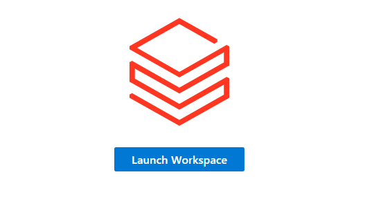
I started by creating cluster, which is simply a computational resource needed for data transformations.
I chose the cheapest available option, since I didn't have lots of data to process.
I also created Azure Key Vault to securely store my secrets, such as connection strings and API keys. Additionally, I used Entra ID to manage identity and access control,
enabling me to create groups, assign roles, and implement multi-factor authentication.
This setup ensured better security and allowed me to apply the principle of least privilege by granting users and applications only the permissions they needed.
Having my cluster created, I started by providing credentials inside Databricks Notebook

While writing the code I encountered an error "This request is not authorized to perform this operation using this permission."
And the solution turned out to be to assign the Storage Blob Data Contributor role to this service.
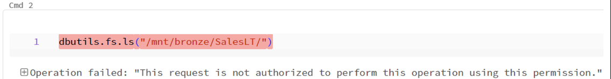
Now I felt free to run all sorts of transformations on my data. I started by modifying a date column and loading it
into silver container:
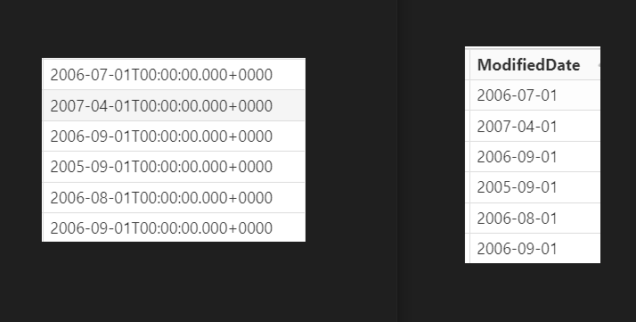
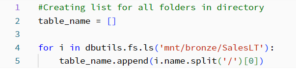
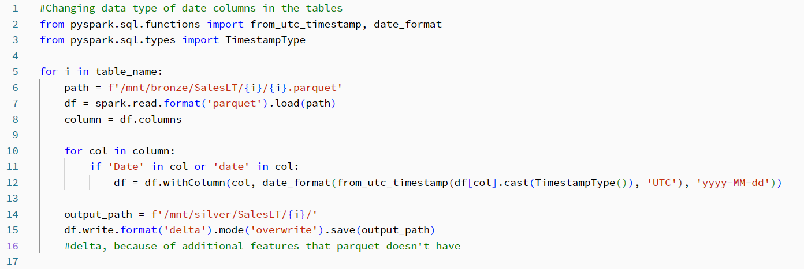
Result was following:
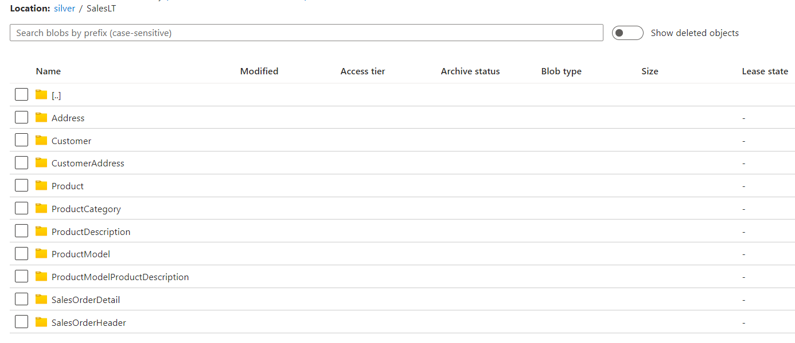

I applied next transformatins like correcting the column names and load the data into a gold container
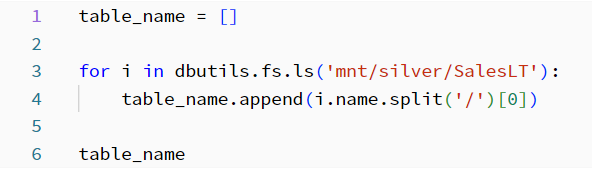
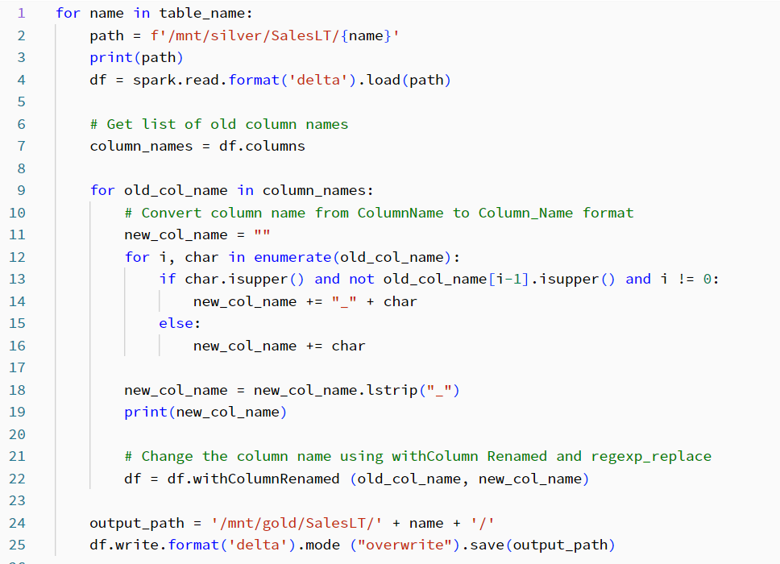
I also added my notebooks to the pipeline. And by doing so I completed the data transformation part of this project!
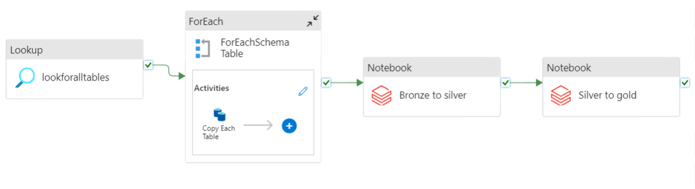
I decided to create Azure Synapse Analytics Serverless SQL Pool in order to serve the data to the consumers.
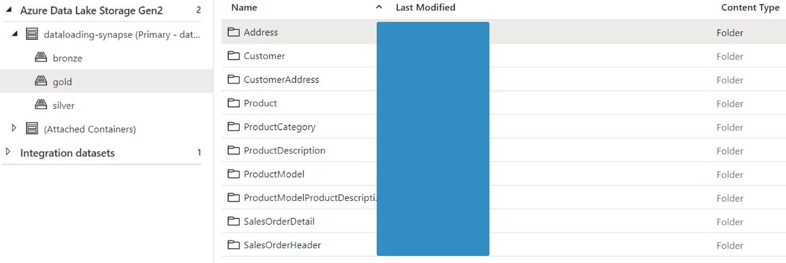
Then, I created views for all my tables (using T-SQL and ADF pipelines) for querying and creating dashboards

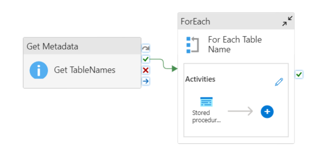
Now, having views with my data, data could be easily queried and used in reports by analysts
I connect PowerBI with Synapse Analytics and loaded my data
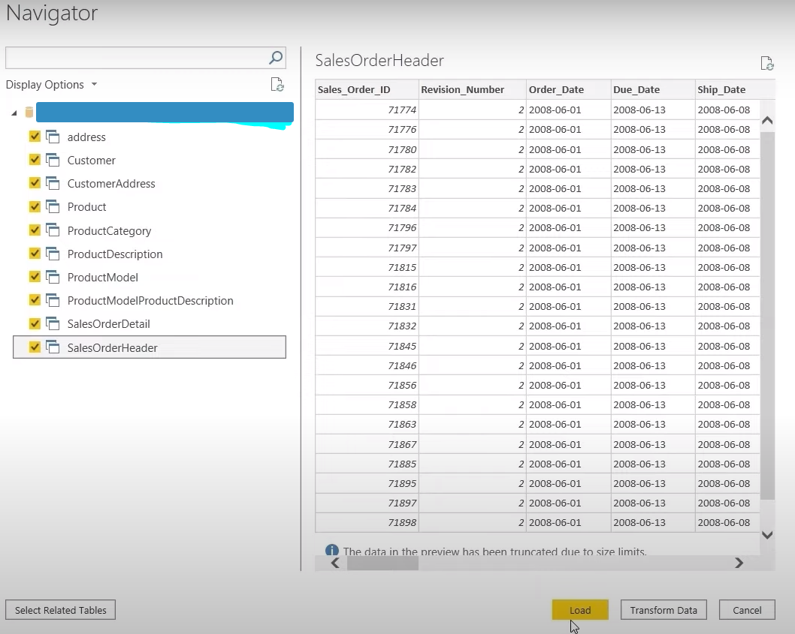
I also added few relationships to PowerBI's default data model
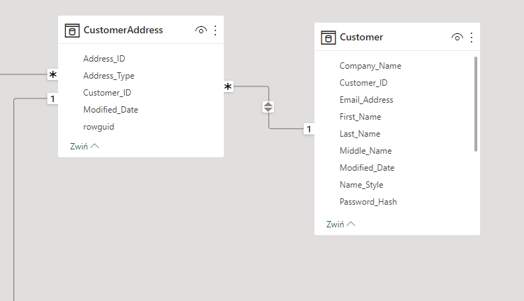
After refining the model, I developed an interactive report that provides insights into my sales data.
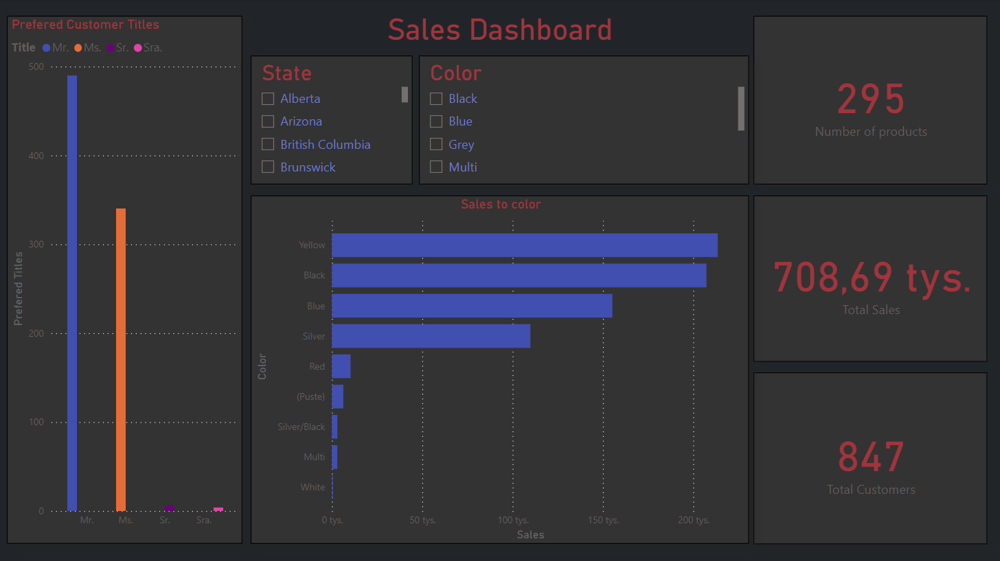
And with this dashboard I completed this project! It was a lot of fun and new interesting stuff that I learnt.
I was a great start if it comes about working with Azure and I will surely continue to use and learn about
this technology in the next projects!
Great thanks to @Mr. K Talks Tech for providing an idea for this project!